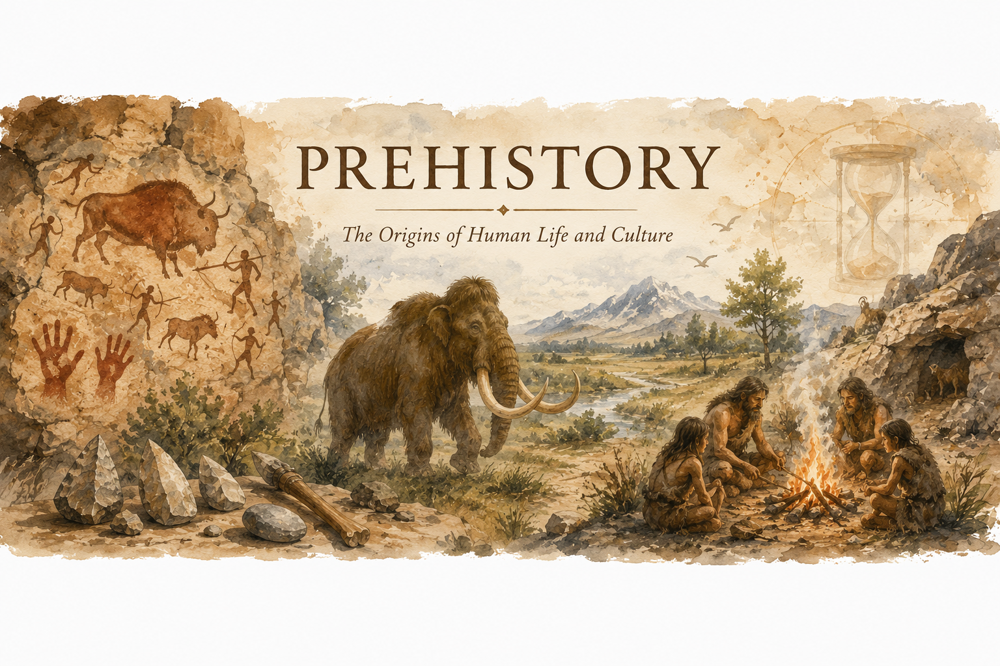
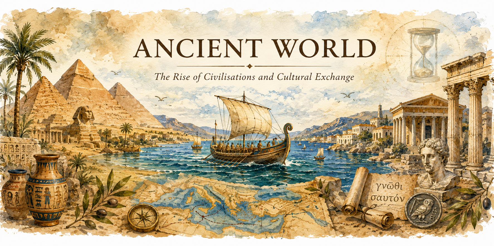
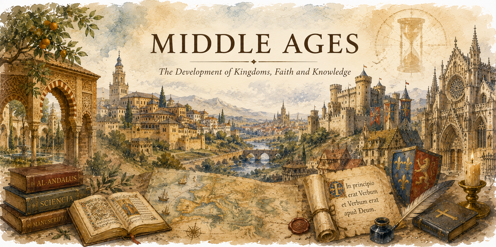
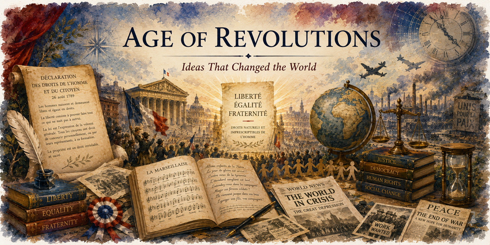
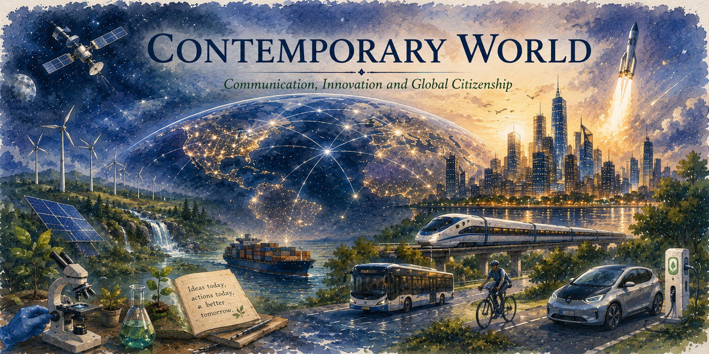

Explore Human Development Through Time

class="period-banner" alt="Prehistory Banner">c. 2.5 million BCE – c. 3000 BCE
Subject: History
Prehistory is the longest period in human history, beginning with the appearance of the first humans and ending with the invention of writing. During this time, people developed tools, discovered fire and gradually transformed their way of life, laying the foundations for future civilizations.
🎧 Audio Narration 🇬🇧
c. 2.5 million BCE – c. 10,000 BCE
Subject: History
During the Paleolithic Age, humans lived as hunter-gatherers, moving from place to place in search of food. They used stone tools, discovered fire and created the first forms of art, such as cave paintings.
🎧 Audio Narration 🇬🇧
c. 10,000 BCE
Subject: History
The Neolithic Revolution marked the transition from a nomadic lifestyle to a sedentary way of life. Humans began to cultivate crops, domesticate animals and establish permanent settlements, leading to the development of the first villages.
🎧 Audio Narration 🇬🇧
c. 776 BCE
Subject: Physical Education
The Ancient Olympic Games were first celebrated in Olympia, Greece, in honour of Zeus. Athletes competed in events such as running, wrestling, boxing and discus throwing. These games promoted physical fitness, fair play and unity among the Greek city-states.
🎧 Audio Narration 🇬🇧

c. 2600 BCE – c. 2500 BCE
Subject: History
The Egyptian pyramids were monumental tombs built for pharaohs during the Old Kingdom. The most famous pyramids, located at Giza, demonstrate the advanced engineering, architectural knowledge and religious beliefs of Ancient Egyptian civilization.
Ancient Times – Present
Subject: Geography
The Mediterranean climate, characterized by hot dry summers and mild wet winters, favoured agriculture, population growth and maritime trade. These conditions contributed to the development of important civilizations and commercial routes across the Mediterranean Sea.
c. 460 BCE – c. 370 BCE
Subject: Physical Education
Hippocrates, often considered the father of medicine, emphasized the importance of balanced nutrition and healthy habits. His ideas about diet, exercise and lifestyle laid the foundations for preventive medicine and continue to influence health education today.
From the Roman Period to the Present
Subject: Spanish Language and Literature
Spanish evolved from Vulgar Latin, the language spoken by Roman soldiers and settlers in the Iberian Peninsula. Over centuries, the language incorporated influences from Visigothic, Arabic and other languages, eventually developing into modern Spanish.
Before the 5th century CE
Subject: English
The Celtic peoples were among the earliest inhabitants of the British Isles. Although their influence on English vocabulary was limited, many place names and geographical terms of Celtic origin are still used in modern English.
🎧 Audio Narration 🇬🇧
From the Roman Period onwards
Subject: English
Latin has had a profound influence on the English language. Thousands of English words related to science, religion, education and law derive from Latin, enriching the vocabulary and shaping the development of English throughout history.
🎧 Audio Narration 🇬🇧
711 CE – 1492 CE
Subject: History
Al-Andalus was the Muslim territory established in the Iberian Peninsula after the Islamic conquest of 711. It became a centre of cultural exchange, scientific progress and artistic development, where Muslim, Christian and Jewish communities coexisted for centuries.
8th – 11th centuries CE
Subject: English
The Viking invasions had a significant impact on the development of the English language and culture. Scandinavian settlers introduced many everyday words into Old English, many of which are still used in modern English today.
🎧 Audio Narration 🇬🇧
800 CE
Subject: French
The Carolingian Empire was established by Charlemagne, who was crowned Emperor in 800 CE. His reign promoted education, culture and political unity across much of Western Europe, laying important foundations for medieval European civilization.
🎧 Audio Narration 🇫🇷

11th – 15th centuries CE
Subject: History
During the Middle Ages, towns and cities grew as centres of trade, craftsmanship and social life. Medieval cities were often protected by walls and featured markets, guilds and important religious buildings such as cathedrals.
1066 CE
Subject: English
The Norman Conquest began in 1066 when William the Conqueror invaded England. This event profoundly influenced English society, politics and language, introducing thousands of French words into English vocabulary.
🎧 Audio Narration 🇬🇧
9th – 15th centuries CE
Subject: History
Feudal society was organised around a hierarchical system based on land ownership and loyalty. Kings granted land to nobles, who in turn relied on knights and peasants. This system shaped medieval political and social structures for centuries.
12th – 16th centuries CE
Subject: History
Gothic architecture emerged in medieval Europe and is characterised by pointed arches, ribbed vaults and large stained-glass windows. Magnificent cathedrals such as Notre-Dame de Paris are among the most famous examples of this artistic style.
🎧 Audio Narration 🇬🇧

15th – 17th centuries CE
Subject: History
The Age of Exploration was a period of overseas expansion during which European explorers travelled across oceans to discover new trade routes and territories. These voyages connected continents and transformed global history.
16th – 18th centuries CE
Subject: History
The Scientific Revolution was a period of major advances in science and knowledge. Thinkers such as Copernicus, Galileo and Newton transformed the understanding of the universe through observation, experimentation and reason.
1665 🧫 Present Day
Subject: Biology and Geology
The discovery of cells began in 1665 when Robert Hooke observed cork under a microscope. Later, scientists such as Schleiden, Schwann and Virchow developed the Cell Theory, establishing that all living organisms are made up of cells.
18th Century 🧬 Present Day
Subject: Biology and Geology
Scientists classify living beings into groups according to their characteristics and evolutionary relationships. Modern classification systems help us understand biodiversity and the relationships among organisms.
1789 CE
Subject: French
The French Revolution began in 1789 and profoundly changed French society. It marked the end of absolute monarchy and promoted ideals such as liberty, equality and fraternity, which influenced democratic movements around the world.
🎧 Audio Narration 🇫🇷
1789 CE
Subject: French
Adopted during the French Revolution, the Declaration of the Rights of Man and of the Citizen established fundamental rights such as freedom, equality before the law and popular sovereignty. It remains one of the most influential documents in modern history.
🎧 Audio Narration 🇫🇷
1792
Subject: French
La Marseillaise is the national anthem of France. It was written in 1792 during the French Revolution and quickly became a symbol of liberty, patriotism and national unity. Today, it remains one of the most famous national anthems in the world.
🎧 Audio Narration 🇬🇧

Present Day
Subject: Geography and Geology
Outdoor physical activities have become increasingly popular in recent decades. Activities such as hiking, trail running, climbing and cycling promote healthy lifestyles while encouraging contact with nature.
21st Century
Subject: Geography and Geology
Bouldering originated as a training activity for climbers and gradually developed into an independent sport. It involves climbing short rock formations or artificial walls without ropes, relying on strength, technique and problem-solving skills.
20th Century – Present Day
Subject: Physical Education
Orienteering is an outdoor sport that combines physical activity, navigation and decision-making. Participants use maps and compasses to find specific checkpoints as quickly as possible.
Prehistory – Present Scientific Knowledge
Subject: Biology and Geology
Scientists have discovered the internal structure of the Earth through the study of seismic waves generated by earthquakes. This research has revealed that our planet is composed of several layers, including the crust, mantle and core.
🎧 Audio Narration 🇬🇧
1929 – 1939
Subject: History
The Great Depression was a severe worldwide economic crisis that began in 1929 after the Wall Street Crash. Millions of people lost their jobs, businesses collapsed and poverty increased dramatically across many countries.
1939 – 1945
Subject: History
The Second World War was the largest and deadliest conflict in human history. It involved countries from across the world and resulted in profound political, social and economic changes that shaped the modern era.
🎧 Audio Narration 🇬🇧
20th – 21st centuries
Subject: Spanish Language and Literature
Spanglish is a linguistic phenomenon that combines elements of Spanish and English. It has developed mainly in bilingual communities and reflects cultural identity, language contact and the influence of globalization.
🎧 Audio Narration 🇪🇸
1960s – Present
Subject: Geography
Since the 1960s, tourism has become one of the main economic activities in the Canary Islands. The archipelago's mild climate, natural landscapes and modern infrastructure attract millions of visitors every year, contributing significantly to the local economy.
🎧 Audio Narration 🇬🇧
1960s – Present
Subject: Physical Education
Modern energy drinks became increasingly popular during the second half of the twentieth century. Although they are marketed as products that improve performance and alertness, excessive consumption may pose significant health risks, especially among young people.
2003 – Present
Subject: Physical Education
The modern electronic cigarette was introduced in 2003 as an alternative to traditional tobacco products. Despite being promoted as a safer option, research has highlighted potential health risks associated with vaping, particularly among adolescents.